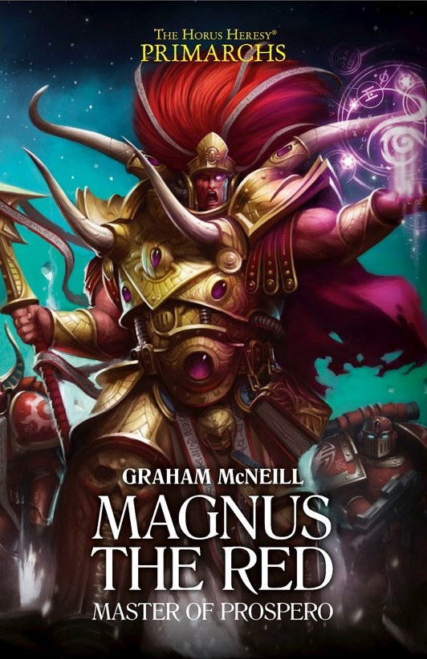

MAGNUS THE RED: MASTER OF PROSPERO

Author: Graham McNeill
Format: Novel
During the Great Crusade, Magnus the Red fights alongside Perturabo while the Thousand Sons pursue forbidden knowledge. A vision forces Magnus to choose between their shared mission and his own search for mastery of the warp.
Introduction reviewed against Black Library’s description on 2026-09-27. The publisher page may contain spoilers.
Publication facts: publisher source, checked 2026-09-26.
Open this work in the interactive Archive to track reading progress and explore related works.